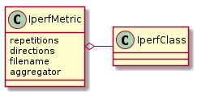
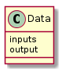
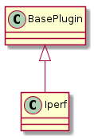

These are classes meant to be dropped into place where Quality classes are called. They take csv-files, convert them to arrays and return matching output values based on indices of the arrays.
class IperfDataConstants(object):
"""
Constants for builders of the XYData class
"""
__slots__ = ()
store_output_option = 'store_output'
repetitions_option = 'iperf_repetitions'
direction_option = 'direction'
client_section_option = 'client_section'
server_section_option = 'server_section'
aggregator_option = 'aggregator'
use_sums_option = 'use_sums'
CONFIGURATION = """
[IperfData]
# this follows the pattern for plugins --
# the header has to match what's in the `components` list
# the component option has to be 'Iperf'
component = Iperf
# to shorten this section the configuration
# for the client (DUT) and server (Traffic PC)
# are broken out so you have to indicate their
# section names here (this is case-sensitive)
client_section = DUT
server_section = TPC
# if store output is set to true, save the raw iperf files
#store_output = True
# if use_sums is True, don't re-add the threads, use the summed lines
# use_sums = True
# the iperf output has to be reduced to a single number
# the default is to take the median of all outputs
# for something else change it (only max, min, mean, median, or sum for now
#)
# this affects both the value returned with each iperf session
# and how the sessions are aggregated if you use more than 1 repetition
#aggregator = sum
# if you suspect there's variation, it might make sense to run it multiple
#times
# This sets how many times to re-run iperf before trying another solution
# I'm not sure if this is more effective than running longer instead
# iperf_repetitions = 1
# direction can be anything that starts with 'u' (for upstream only),
# 'd' (downstream only), or 'b' (both)
# I have no idea how to interpret the best location if you measure both, th
#ough
# 'upstream' means DUT -> Server
# 'downstream' means SERVER -> DUT
direction = downstream
# iperf settings
# these can be any long-form iperf options (without the dashes)
# so looking at the iperf man page (or `iperf -h`) will give you the valid
#options
# note that in some cases iperf uses shortenings (e.g. `len` vs `length`)
# Any option not given will use the iperf defaults
# parallel = 4
# if the option takes no settings, use True to turn on
# udp = True
# but note that udp isn't well tested
# also the --client <hostname> and --server options are set using the
# DUT and Server info so don't set them
[DUT]
# this is an example for the connection to the dut
# the section header has to match what's declared in the
# iperf section
# the connection_type can be ssh or telnet
connection_type = ssh
control_ip = 192.168.10.50
test_ip = 192.168.20.50
username = tester
# password is optional if host-keys are set up and you are using ssh
# password = testlabs
# the 'prefix' will be prepended to all commands sent to the device
# the main uses are adding 'adb shell' or path-directories
# because these two cases are different (`adb shell` is space separated fro
#m commands
# while setting a PATH has to be semi-colon separated) the prefix is added
#as-is
# it's up to the user to create a sensible one
# it looks funny with the '=' but everything to the right of the first '='
#is
# read as a string
# prefix = PATH=/opt/wifi:$PATH; adb shell
# timeout is amount of time to allow a command to run before giving up
# because timeouts raise an error, this should only be used for
# problematic devices
# timeout = 1 minute 30 seconds
# operating-system is currently just an identifier
# operating_system = linux
# These are the subset of parameters that I thought necessary
# if you need to add more and you know it's supported by
# paramiko or telnet's constructors you should be able to add it
# e.g. if you know there is a 'port' parameter you can set it:
# port = 52686
[TPC]
# this is basically configured the same way as the client-section
connection_type = ssh
control_ip = 192.168.10.50
test_ip = 192.168.20.50
username = tester
"""
DESCRIPTION = """
The Iperf quality metric runs iperf and returns the median bandwidth to the
optimizer that calls it.
"""
This is yet another aggregator. In this case I needed some way to interpret the directions (e.g. upstream) and realised that assuming only one direction is not necessarily the best way to do things so I’m now going to allow the user to specify repetitions, directions and an aggregator that will reduce multiple runs to a single value.

IperfMetric |
|
IperfMetric.aggregator |
|
IperfMetric.__call__ |
Note
this seems almost generic – except for the need to pass in a filename. If this condition is removed then this could be made into a generic aggregator.
To match the older-code the call has to expect an object of the form:

If the output is not set it sets it using the inputs and returns the output. It also maintains a count of all the calls made (self.quality_checks) so that the efficiency can be double-checked.
A convenience class for building IperfMetric objects. It implements the plugin interface so the help and list sub-commands can use it.

Iperf |
|
Iperf.product |
|
Iperf.iperf_configuration |
|
Iperf.iperf_parser |
|
Iperf.aggregator |